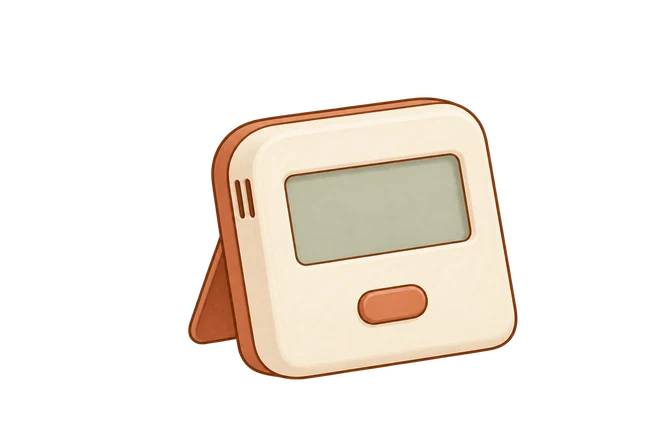
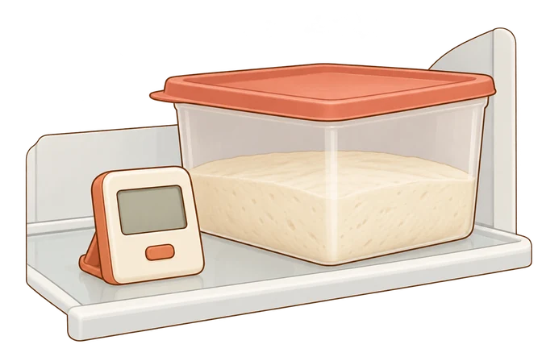
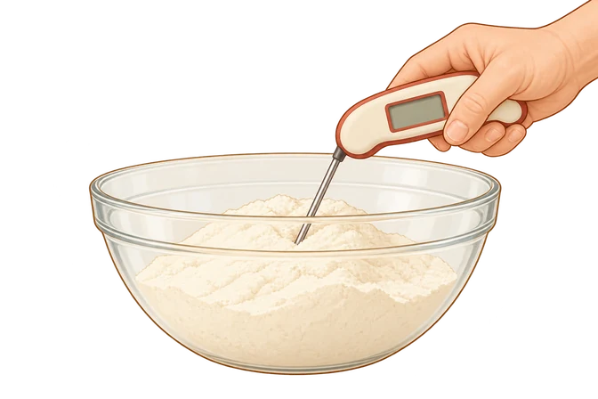
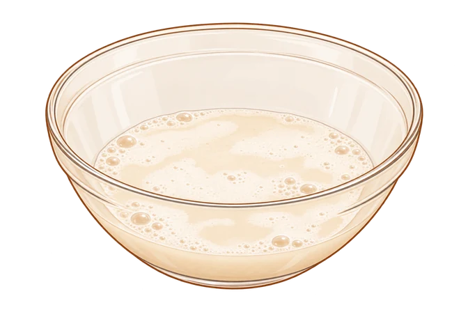
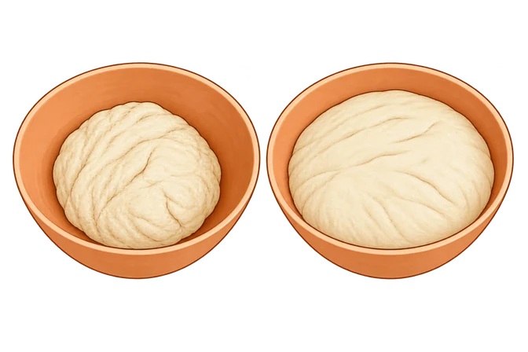

01 · Metodo e fonti · temperatura della cucina
Misurare l’aria della stanza

Misura l’aria vicino alla zona in cui riposa l’impasto: la sua temperatura può essere diversa da quella dell’impasto.02 · Problemi e soluzioni · fermentazione in frigo
Controllare il ripiano del frigo

Controlla la temperatura dell’aria sul ripiano usato, lasciando chiuso il recipiente. La temperatura del cuore dell’impasto può essere diversa.03 · Metodo e fonti · temperatura dell’acqua
Misurare la temperatura della farina

La sonda misura la temperatura della farina, una delle variabili usate per calcolare quella dell’acqua.04 · Problemi e soluzioni · impasto che non cresce
Controllare un lievito secco dubbio

Una prova di attività del lievito secco in acqua, utile quando si dubita della sua vitalità. Non serve eseguirla per ogni impasto.05 · Problemi e soluzioni · sviluppo della lievitazione
Confrontare lo sviluppo dell’impasto

Osserva come cambia il volume nello stesso recipiente. La fine della lievitazione dipende dall’impasto e dal procedimento.